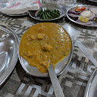

Food Gallery


.jpg)
.jpg)
Our famous Rajma Chawal, Paneer Pakoda, Tandoori Parathas and authentic North Indian meals have been loved by travelers and families for generations.
A trusted stop for travelers visiting Katra and Mata Vaishno Devi for over 50 years.
Known for authentic vegetarian food, warm hospitality and generous portions.
For over 50 years, travelers visiting Katra and Mata Vaishno Devi have stopped at Sharma Vaishno Dhaba for authentic vegetarian food and warm hospitality.

Our famous Rajma Chawal, Paneer Pakoda, Tandoori Parathas and authentic North Indian meals have been loved by travelers and families for generations.
.jpg)
Over the years, Sharma Vaishno Dhaba has welcomed thousands of travelers, public figures, and distinguished guests who have enjoyed our hospitality and traditional vegetarian cuisine.
📍 Address:
VXP4+4PM, Suketer Katra Domel,
Chhurta, Domel,
Jammu & Kashmir 181224
📞 Phone:
+91 98583 36737
+91 88250 30227
💳 UPI Accepted
🌐 Online Payments Accepted
💵 Cash Payments Accepted
⭐ Serving Travelers Since 1972